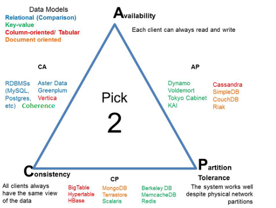

Simone Casamassa
The important thing is not to stop questioning
The important thing is not to stop questioning
Se utilizzando Coherence si decide di serializzare gli oggetti tramite Portable Object Format (POF) Serialization bisognerà dichiarare all'interno del file pof-config.xml il mapping tra la classe da serializzare ed il relativo serializzatore. Se la classe da serializzare è una Inner Class dovremo utilizzare la seguente sintassi per indicare la classe oggetto di serializzazione:
<user-type>
<type-id>1001</type-id>
<class-name>it.sample.model.Bet$BetType</class-name>
<serializer>
<class-name>com.tangosol.io.pof.EnumPofSerializer</class-name>
</serializer>
</user-type>
Nell'esempio precedente viene utilizzato il carattere '$' per indicare che BetType è una InnerClass dichiarata all'interno della classe Bet.
Se utilizzando Coherence si ha la necessità di catturare eventi di modifica della cache, si dovrà registrare alla NamedCache un Listener Coherence con eventualmente un Filtro per rimanere in ascolto solo di eventi relativi ad un sottoinsieme di entry presenti in cache. Un esempio di registrazione di Listener Coherence:
CacheFactory.getTypedCache(cacheName, TypeAssertion.withTypes(keyClass, valueClass)).addMapListener(listener, new Filter(), false);
Al fine di evitare problematiche di Listener duplicati nel Cluster Coherence ricordarsi sempre di cancellare il listener durante lo stop della propria applicazione; inoltre i listener registrati ed eventuali filtri utilizzati dovranno ri-definire i metodi equals e hashCode al fine di gestire correttamente lato Cluster la fase di registrazione e cancellazione dei listeners.
Per abilitare il monitoraggio degli mBean Coherence tramite la specifica jmx bisogna lanciare i Managed Server data storage con una delle due seguenti properties:
-Dcoherence.management=local-only //monitoraggio abilitato localmente
-Dcoherence.management=all //monitoraggio abilitato da remoto
Verificare che non siano presenti le seguenti properties che renderebbero non visibili alcuni mBean di Coherence:
-Dcom.sun.management.jmxremote=true
-Dcom.sun.management.jmxremote.ssl=false
-Dcom.sun.management.jmxremote.authenticate=false
-Dcom.sun.management.jmxremote.port=10039
In fase di progettazione della base di dati, a seconda dei diversi requisiti, si dovrà scegliere quale "famiglia" di prodotto utilizzare.
Prima di elencare le principali soluzioni software ricapitoliamo le proprietà di un sistema distribuito:
Consistenza: tutti i nodi nella rete vedono lo stesso valore del dato nello stesso istante; assicurata quindi l'integrità del dato trai i diversi nodi del sistema distribuito.
Disponibilità: il servizio risulta sempre disponibile garantendo risposte ai client.
Tolleranza della partizione: il servizio continua ad operare correttamente anche in presenza di perdita di messaggi o di partizioni di rete.
Un sistema distribuito può soddisfare solo due delle tre proprietà descritte.

Se si sviluppa un'applicazione con Producer JMS in un cluster Weblogic formato da più istanze di Managed Server la configurazione di default della Connection Factory JMS abiliterà solo accodamenti "single node", ovvero ogni Producer scriverà sulla destinazione locale alla sua istanza, non sfruttando così il parallelismo delle esecuzioni multi server.
Per abilitare un accodamento bilanciato su tutto il cluster bisogna valorizzare le seguenti configurazioni come segue:
...
cmo=cd('/JMSSystemResources/'+JMS_MODULE_NAME+'/JMSResource/+JMS_MODULE_NAME+
'/ConnectionFactories/'+CONN_FACTORY_NAME/LoadBalancingParams/'+CONN_FACTORY_NAME)
cmo.setServerAffinityEnabled(false)
cmo.setLoadBalancingEnabled(true)
...
Ad oggi il repository centrale maven di Oracle non risulta stabile per le dipendenze di Weblogic.
Al fine di risolvere correttamente tutte le dipendenze maven di Oracle Weblogic la best practice da documentazione è quella di popolare il repository locale maven con le dipendenze di Weblogic a partira da un'installazione locale.
Guida
In breve, installare e configurare il weblogic-maven-plugin:
Assicurare elevate perfomance con JDBC in Weblogic
Public void myTopLevelJDBCMethod() {
Connection c = null; // defined as a method-level object, not accessible or kept where other threads can use it.
… do all pre-JDBC stuff…
// The try block, in which all JDBC for this method (and sub-methods) will be done
Try {
// Get the connection directly, fresh from a WLS datasource
c = myDatasource.getConnection();
… do all your JDBC… You can pass the connection to sub-methodshod
doMyJDBCSubTaskWith( c );
c.close(); // close the connection as soon as all JDBC is done
c = null; // so the finally block knows it’s been closed if it was ever obtained.
.. do whatever else that may remain that doesn’t need JDBC.
..I have seen *huge* concurrency improvements by closing the connection ASAP
} catch (Exception e) {
.. do what you want/need, if you need a catch-block, but *always* have the finally block:
} finally {
// If we got here somehow without closing c, do it now, without fail, as the first thing in the finally block so it always happens
If (c != null) try {c.close();} catch (Exception ignore){}
… do whatever else you want in the finally block
}
}
Ottimizzazioni generiche: Al fine di sviluppare applicazioni performanti che utilizzano RDBMS, condivido le principali best practices da adottare in termini di sviluppo e configurazione.
La scelta di un grafico nella visualizzazione di informazioni risulta basilare per condividere il corretto messaggio agli altri interlocutori.
Il seguente diagramma può aiutare a scegliere il grafico da utilizzare in base al numero ed al genere di variabili da graficare:

In progetti d'integrazione aspetti trasversali al business come la gestione degli errori rivestono un ruolo
fondamentale.
La presentazione descrive le principali pratiche da adottare in contesti di integrazione ESB, SOA o BPM per poter prevenire e gestire gli errori. In particolar modo saranno trattati 4 punti principali:
 .
.
DevOps è un termine entrato da qualche anno nel gergo informatico delle metodologie di sviluppo ed operation IT. Con la seguente presentazione si ricapitolano i principali componenti metodologici, il modo in cui questi si applichino alla realtà e con quali strumenti.
Oltre a fornire una panoramica su ciò che DevOps è si forniscono le principali linee guida per adottare teniche di DevOps sul progetto:
 .
.
Principali linee guida per lo sviluppo e la progettazione di logiche d'integrazione tramite Oracle Service Bus:
In una base di dati relazionale si possono realizzare diverse tipologie di relazioni tra le tabelle, andando a definire quindi diverse categorie di join.
In particolare, il JOIN è una clausola del linguaggio SQL che serve a combinare (unire) le tuple di due o più relazioni di un database tramite l'operazione di congiunzione (od unione) dell'algebra relazionale. Lo standard ANSI definisce alcune specifiche per il linguaggio SQL sul tipo di JOIN da effettuare: INNER, FULL, LEFT e RIGHT. In alcuni casi è possibile che una tabella possa essere combinata con se stessa, in questo caso si parlerà di self-join.
La totale comprensione delle differenze tra esse permette di evitare inconvenienti ed errori di relazione durante la fase di sviluppo e test. Per chiarire visivamente le differenze tra i vari join ed i risultati ottenuti tra due tabelle, risulta intuitivo ed utili visualizzare il seguente diagramma che spiega in modo conciso ma chiaro i diversi join con i diversi risultati ottenuti: